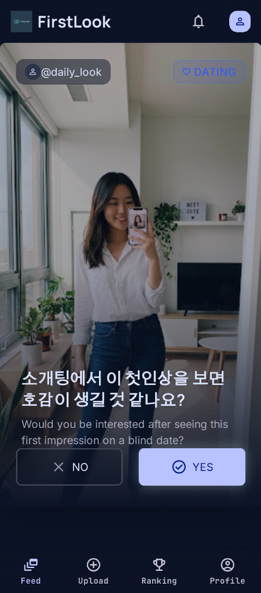

work
Business
person
비즈니스 캐주얼 룩으로
전문성이 느껴지나요?
Does this business casual look feel professional?
thumb_up YES 84%
총 1,420명 참여
NO 16% thumb_down
신뢰도 지수: 96.2 / 100
swipe_vertical
위/아래 스와이프 또는 스크롤
NODE: 89.B
keyboard_double_arrow_down
화면을 스크롤하거나 위로 스와이프하여 다음 사용자 보기